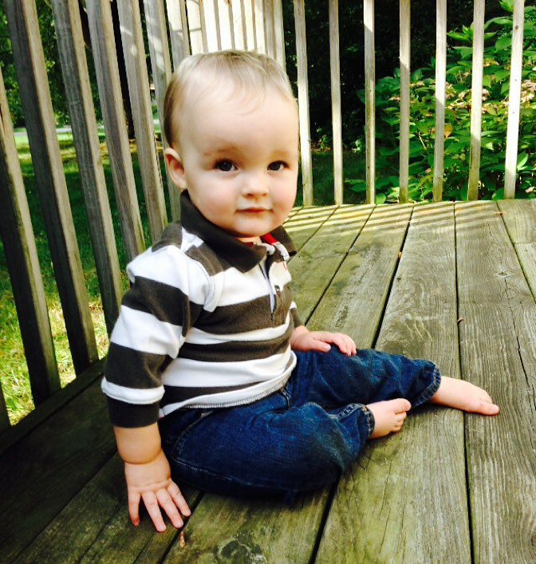
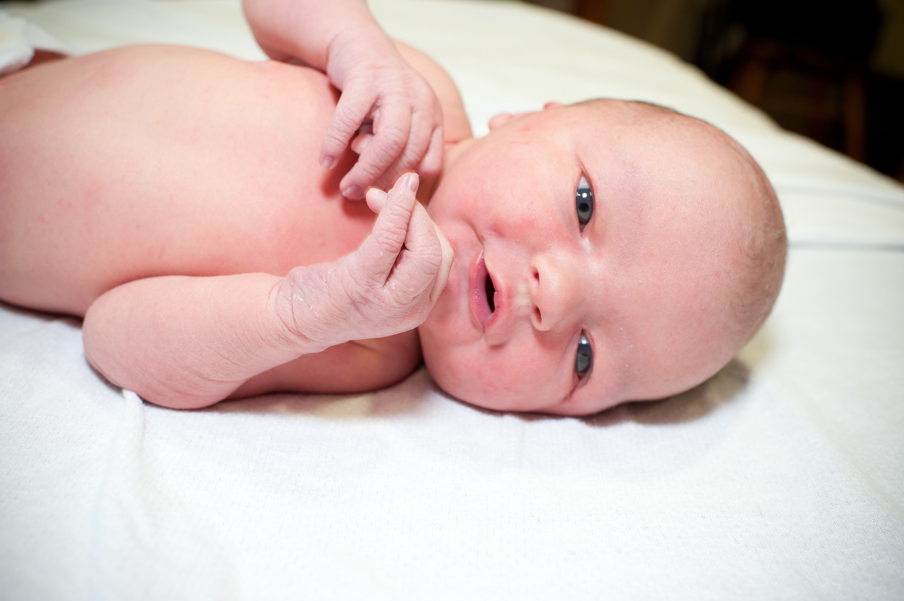

Lincoln
Family
Samantha


Lincoln riding his elephant
Lincoln on the porch
Lincoln's Birth day
Lincoln was born on November 5 2014. He was a much awaited addition to our family. We found out a few months after this birth that he was born with
craniosynostosis
. After surgery at the
Devos Children's Hospital
everything is perfect.